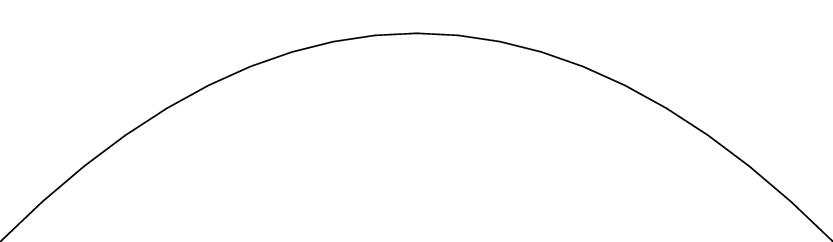
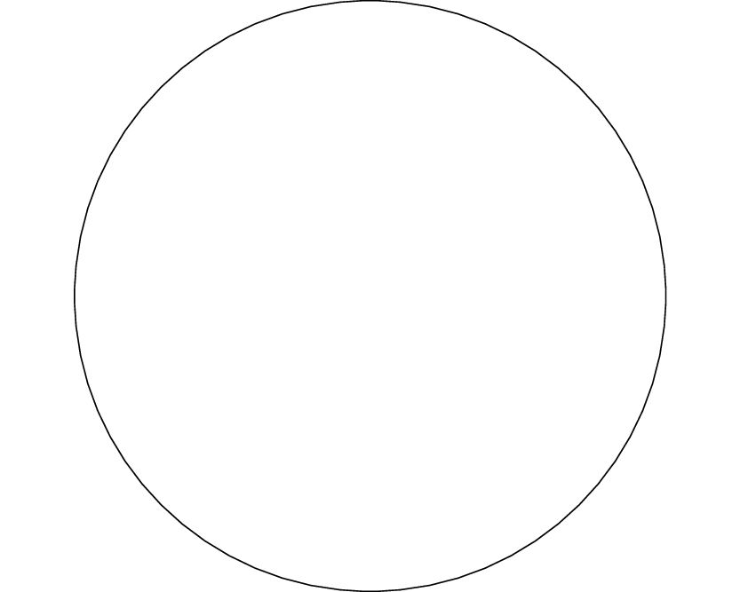

Alternate Generations of the Koch Curve
By the Iterated Function System Theorem, the initial compact set \(K_0\) does not matter. In the three animations below, the set \(K_0\) is, respectively, a line, a parabolic arc, and a circle. After a few iterations of the construction, the sets are indistinguishable!

